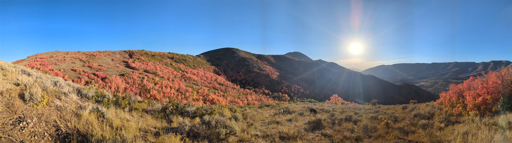
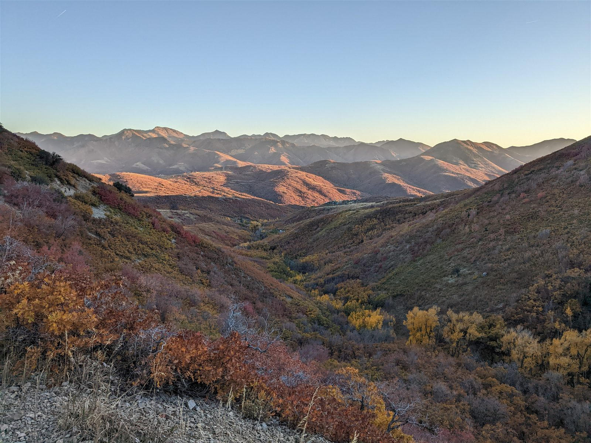
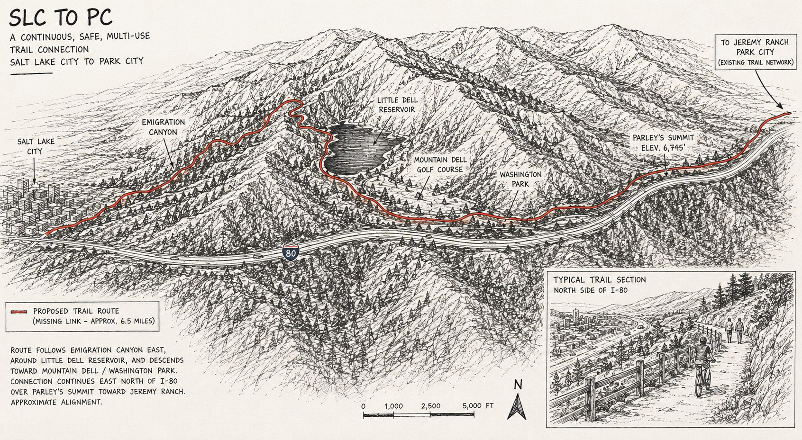
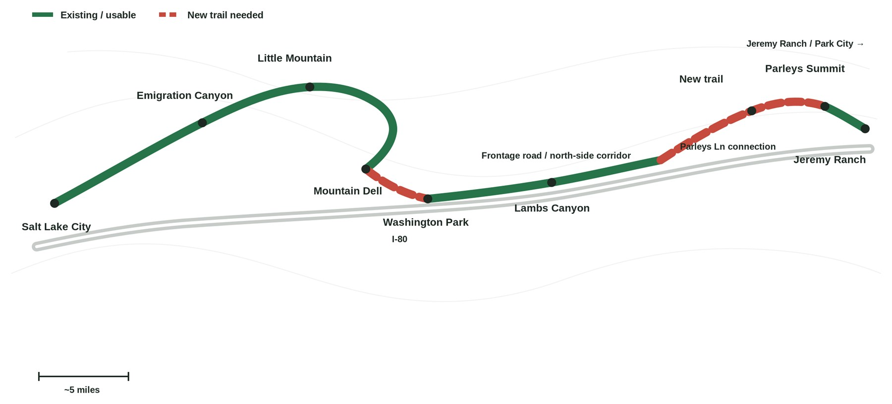
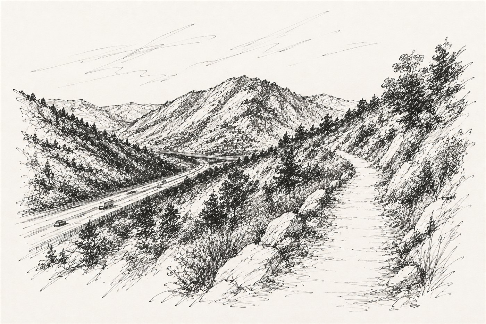
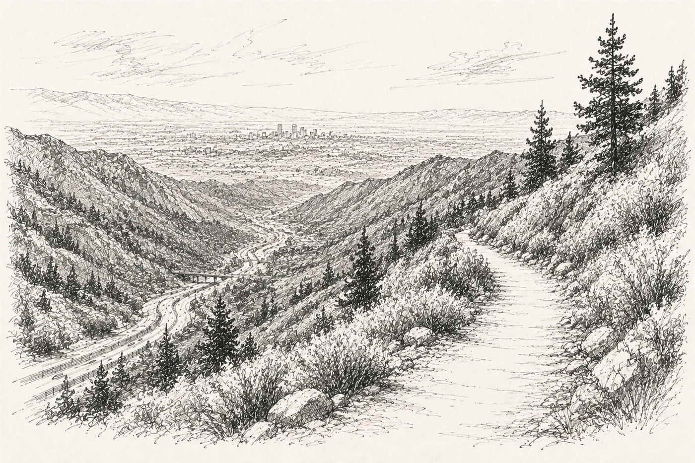
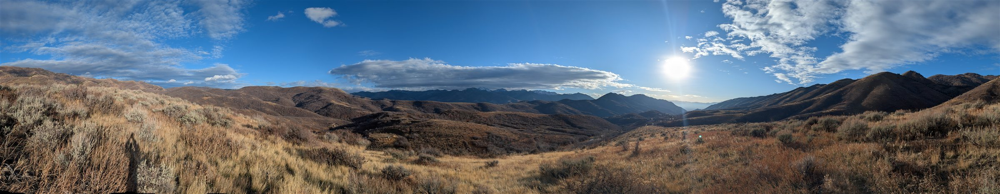
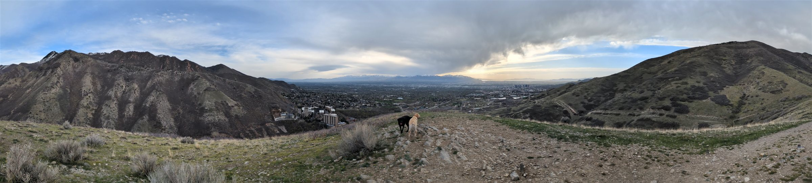

The Vision
Imagine leaving Salt Lake City on foot, on a bike, or with your dog and traveling all the way to Park City on a continuous trail separated from highway traffic.
A paved, non-motorized corridor connecting Utah's capital city to Park City and the incredible trail networks, open spaces, and recreation opportunities in between.
Ride from Salt Lake to Park City. Walk your dog for a few miles and turn around. Run through the canyon. Take your kids for a bike ride. Commute on an e-bike. Or simply have a safe place to get outside and explore.
At either end, the trail wouldn't simply stop. It would connect into trails that already reach throughout the Salt Lake Valley and across Summit County, making them part of one larger, connected network.
It wouldn't belong to cyclists, runners, commuters, families, or tourists. It would belong to all of us: one continuous trail connecting two communities and hundreds of miles of possibilities.

The Details
This isn't about building a trail from Salt Lake City to Park City entirely from scratch.
Parley's Trail already crosses the Salt Lake Valley to the mouth of Parleys Canyon. On the other side of the mountains, Park City and Summit County have hundreds of miles of trails. In between are existing roads, trails, frontage roads, public lands, and utility and transportation corridors that get surprisingly close to connecting the two.
The problem is the gaps.
And this isn't a new idea. Salt Lake cyclist Gordon Stam proposed a similar connection nearly two decades ago and helped convince Salt Lake County to fund a feasibility study. That work ultimately concluded that a paved trail through Parleys Canyon was possible, with costs then estimated at roughly $8.8 million to $16 million depending largely on how the route crossed I-80 near Lambs Canyon. Cycling Utah helped champion the project.
Then, as far as I can tell, it stalled. I can't find a copy of the final study or anyone still actively working to make the connection. So I started looking at the corridor myself.

I've ridden and walked it from both directions. I've explored Emigration Canyon through East Canyon and Lambs Canyon and bushwhacked toward Summit Park. I've also gone through Mountain Dell, past the golf course and along the existing frontage road to the archery range, then continued along the ridge until reaching a service road that connects to Parleys Lane. From there, an existing trail leads into Jeremy Ranch and the larger Park City trail network.


I'm not a trail engineer, and none of this is intended to be a proposed alignment. A real route requires engineering, environmental review, landowner cooperation, agency involvement, and a new look at conditions on the ground.
But after actually walking and riding these corridors, my own view is that the north side of I-80 deserves serious consideration. Close the connection between Mountain Dell and the existing frontage-road corridor, then find a way from the archery range area to Parleys Lane near the summit. Much of the rest already connects.
That possibility is what makes this project so interesting. The missing link between two enormous trail systems may be much smaller than it appears on a map.
Utah is also investing in exactly this kind of connectivity — the state has committed $95 million toward a statewide paved trail network. This isn't just a general commitment, either: UDOT's own Utah Trail Network Master Plan already maps the stretch from Mountain Dell to Parleys Summit as R2-046 — Parley's Trail Gap, a Proposed Gap Closure, with the segment from the valley floor to Mountain Dell mapped as a Proposed Vision Corridor. This connection already has a name in state planning. It just doesn't have funding or a finished study yet.
And now the Winter Games are coming back to Utah in 2034 — the state's second time hosting since 2002.
That's a once-in-a-generation opportunity to get this connection studied, approved, funded, and built. Not just to create another recreational trail, but to connect two communities that share the same mountains and the same outdoor culture.
Utah doesn't need to be a collection of disconnected city islands in a beautiful landscape. We can connect them.


A sense of what's possible, once it's connected — concept sketches, not final designs.

Who's Behind This
I'm Alex Pacanowsky. I was born in Salt Lake City and live here with my family. I'm an engineer and general manager at a local manufacturing company, and I help coach the Judge Highland mountain bike team. Most weekends you'll find me hiking with my dogs, Lily and Kona, cycling, mountain biking, skiing, or otherwise spending time in these same mountains.

Growing up, family trips to Colorado meant driving I-70 past Vail. I remember looking out the window and seeing the paved path alongside the highway, with people biking, walking, and skating for miles completely separated from traffic. I always wondered why Utah didn't have something similar, and I still do.
SLC to PC isn't a company, and I don't have a stake in it beyond wanting to ride my bike home from Park City someday without dodging highway traffic. I think this connection is overdue, and I think enough other people feel the same way that it's worth finding out what we can do about it.
Have questions, know something about the corridor, or happen to have a copy of the original feasibility study? Email me at hello@slctopc.org.
The Ask
This isn't a petition to a specific agency. It's a way to find out whether enough of us want this connection to make a serious effort worthwhile. If 1,000 people sign on, I'll take that as a clear signal and file the paperwork to make SLC to PC an official 501(c)(3) nonprofit.